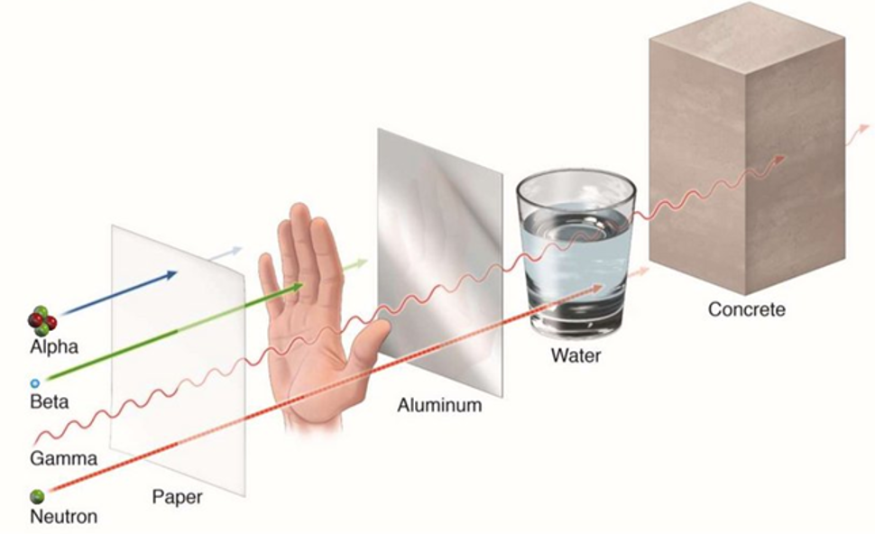

Вивчити механізми виникнення гамма-випромінювання при радіоактивних розпадах і поглинання радіоактивного випромінювання речовиною. Дослідити залежність поглинання гамма-випромінювання від товщини поглинаючого шару і визначити коефіцієнт поглинання заліза та свинцю.
Явищем радіоактивності називається мимовільне перетворення одних ядер в інші, що супроводжується випусканням радіоактивного випромінювання. До природніх відносяться:
α - розпад ядер пов'язаний з випусканням α - частинок, що представляють собою ядра атома гелію 2He4 . Цей процес супроводжується зменшенням масового числа нуклонів на чотири одиниці і зарядового числа на дві. Символічно така реакція записується в такий спосіб:
ZXA→ Z-2YA-4+ 2He4
(1.1)
де ZXA – деяке (материнське) ядро, що розпадається;
Z-2YA-4 – (дочірнє) ядро, що утворюється.
Як правило, α-розпад супроводжується γ-випромінюванням. β - розпад ядер пов'язаний з випусканням ядром електрона або позитрона з відповідною зміною заряду ядра. Масове число при цьому зберігається. Перший вид розпаду (електронний розпад) символічно записується в такий спосіб:
ZXA→ Z+1YA+e-+ṽ
(1.2)
де: e- – електрон, ṽ– антинейтрино.
Другий вид β- розпаду (позитронний розпад) відбувається за схемою:
ZXA→ Z-1YA+e++vде: e+ – позитрон (антиелектрон), v– нейтрино
(1.3)
Спонтанне, тобто мимовільне, ділення важких ядер на дві приблизно рівні частини тягне за собою випускання нейтронів і ланцюжок радіоактивних перетворень, які супроводжуються радіоактивним випромінюванням.
Виникнення гамма-випромінювання при α- і β- розпаді пояснюється тим, що ядра, які утворюються в результаті радіоактивних розпадів, можуть перебувати в збудженому стані. Переходячи в стан з меншою енергією, ядра випускають гамма - кванти, енергія яких дорівнює різниці енергій ядра до і після переходу. Спектр гамма-квантів (їх розподіл по енергіях) лінійчатий, що обумовлено дискретністю енергетичних станів атомних ядер.
γ - випромінювання являє собою потік фотонів великої енергії з довжиною
хвилі 10
-1÷10-3 Å (для порівняння
згадаємо, що діапазон довжин хвиль видимого світла 3800÷7600Å). При взаємодії з речовиною
гамма-випромінювання
проявляє
чітко виражені корпускулярні властивості і його можна розглядати як потік фотонів (гамма - квантів).
При проходженні через речовину радіоактивне випромінювання втрачає свою енергію, поступово поглинаючись речовиною. Проникаюча здатність випромінювання залежить від типу випромінювання, природи речовини і інших чинників. 
Особливо сильно поглинаються речовиною α частинки: в газах при нормальному тиску їх пробіг становить кілька сантиметрів, а в твердих речовинах – частки міліметра; β- частинки поглинаються речовиною дещо менше: наприклад, вони повністю поглинаються платівкою алюмінію завтовшки в декілька сантиметрів. Заряджені α- і β- частинки втрачають свою енергію через багаторазові зіткнення з атомами речовини, які призводять до порушення та іонізації цих атомів.
Гамма-випромінювання має значно більшу проникаючу здатність, ніж α- і β- випромінювання. Гамма-кванти, володіючи нульовою масою спокою, не можуть сповільнюватися в середовищі, тому при проходженні крізь речовину вони або поглинаються, або розсіюються (змінюють напрямок свого руху). Основними процесами, які супроводжують проходження гамма-випромінювання через речовину, є фотоефект, ефект Комптона і утворення електронно - позитронних пар.
Фотоефект – процес непружної взаємодії гамма-випромінювання з речовиною, при якому падаючий фотон поглинається атомом і передає свою енергію одному з електронів, вибиваючи його з атома. Фотоефект відбувається на пов'язаних електронах (коли енергія зв'язку електрона в атомі можна порівняти з енергією фотона), тому в міру збільшення енергії фотонів ймовірність фотоефекту зменшується. Фотоефект є переважаючим механізмом поглинання в області малих енергій гамма-квантів (E < 0,1 МеВ для алюмінію і E < 0,5 МеВ для свинцю).
При більш високих значеннях енергій гамма-квантів ймовірність фотоефекту дуже мала і основним механізмом їх взаємодії з речовиною стає комптонівське розсіювання – процес пружної взаємодії фотона з вільним електроном (електрон можна вважати вільним, якщо енергія фотона істотно перевищує енергію зв'язку електрона в атомі). В результаті взаємодії падаючий фотон передає частину енергії електрону і змінює напрямок свого руху (розсіюється).
Утворення електронно - позитронних пар (🇾 → e-+ e+ ) може відбуватися при проходженні фотона з енергією E > 1,02МеВ (подвоєна енергія спокою електрона) в електричному полі атомних ядер. При цьому фотон зникає, і вся його енергія розподіляється між утвореними електроном і позитроном. Імовірність цього процесу збільшується з ростом енергії фотона.
В результаті всіх цих процесів при проходженні через речовину потік гамма-випромінювання послаблюється. Електромагнітне випромінювання характеризується інтенсивністю J , величиною, що представляє собою енергію, яка переноситься фотонами в одиницю часу через одиничну площадку перпендикулярну напрямку поширення випромінювання.
Зменшення інтенсивності гамма-випромінювання при проходженні нескінченно тонкого шару речовини пропорційне товщині цього шару і інтенсивності падаючого випромінювання:
dj = -kjdx
(2.1)
де k – лінійний коефіцієнт ослаблення, який залежить від природи поглинаючої речовини і енергії фотонів падаючого випромінювання.
Інтегруючи рівняння, можна отримати закон ослаблення випромінювання шаром речовини товщиною d:
J = J0e-kd
(2.2)
де J0 і J – інтенсивність випромінювання до та після проходження шару речовини товщиноюd.
На рис. 1 показана функція зменшення інтенсивності випромінювання при проходженні через речовину.
Рис. 1 – Зміна інтенсивності випромінювання при поглинанні речовиною
З формули (2.2) випливає, що інтенсивність гамма-випромінювання по мірі проходження через шар речовини товщиною x зменшується по експоненціальному закону. Швидкість зміни інтенсивності визначається коефіцієнтом поглинання (зазвичай вимірюється в см -1 ). Експоненціальна залежність (2.2) строго виконується для вузького пучка фотонів однакової енергії.
Для характеристики здатності речовини послаблювати випромінювання використовується також поняття товщини шару половинного ослаблення Δ1/2, при проходженні якого інтенсивність випромінювання зменшується в два рази. Використовуючи (2.2), можна показати, що:
(2.3)
Властивість ядерного випромінювання іонізувати атоми і молекули газу використовується в приладах, що реєструють випромінювання. Ці прилади називаються газорозрядними лічильниками. Залежно від виду розряду газорозрядні лічильники поділяються:
Пропорційні лічильники.
Пропорційні лічильники, як правило, представляють собою циліндр (катод), по осі якого в вигляді тонкої металевої нитки розташований анод. Частинки ядерного випромінювання проникають в робочий простір лічильника через віконце, зроблене з слюди або алюмінієвої фольги, або безпосередньо через стінки лічильника. Лічильник заповнюють газом або сумішшю газів, і заряджена частинка або гамма-квант на шляху свого проходження здійснює іонізацію нейтральних молекул, створюючи тим самим деяке число пар іонів (електронів і позитивних іонів), які під дією електричного поля рухаються до відповідних електродів. З електродів лічильника імпульс струму надходить на підсилювач і потім на реєструючий пристрій. За величиною імпульсу струму можна судити про енергію частинки ядерного випромінювання.
В апаратурі для вимірювання іонізуючих випромінювань пропорційні лічильники застосовуються для реєстрації м'якого (тобто низькоенергетичного) бета- і гамма-випромінювання, а також для реєстрації відносно "повільних" нейтронів.
Лічильники Гейгера-Мюллера
Даний лічильник (рис. 2) влаштований аналогічно пропорційному, але відрізняється від останнього незалежністю величини імпульсу струму, від початкового числа пар носіїв зарядів, утворених іонізуючою часткою в чутливому об'ємі лічильника. Тому лічильники Гейгера-Мюллера визначають лише інтенсивність випромінювання, не даючи інформації про енергію частинок випромінювання. Величина імпульсу залежить лише від параметрів лічильника і прикладеної напруги. Такий характер роботи пояснюється особливостями механізму розряду.
Рис. 2 – Схема підключення лічильника Гейгера-Мюллера
Початкова іонізація в лічильниках Гейгера-Мюллера необхідна лише для запалювання розряду, який потім розвивається самостійно, незалежно від початкової іонізації. Для режиму самостійного розряду велике значення мають лавини, викликані ультрафіолетовим випромінюванням атомів і ударами позитивних іонів. Атоми, які порушені часткою ядерного випромінювання, випускають ультрафіолетове випромінювання. Позитивні іони і електрони під дією прикладеної, більш високої ніж в пропорційних лічильниках, напруги набувають енергії, достатньої для іонізації газу. Нові іони активно залучаються електричним полем в процес іонізації нейтральних молекул, забезпечуючи тим самим лавинний характер самостійного розряду. За час 10 -5–10 -7 с увесь лічильник буде охоплений розрядом.
Самостійний розряд після розвитку першої лавини необхідно погасити. Для цього застосовують спеціальні електронні пристрої або вводять до складу газу спеціальні добавки (наприклад, пари спирту), які забезпечують гасіння за рахунок зміни внутрішнього механізму розряду. В даний час випускають переважно лічильники, що самі гасяться.
Коронні лічильники
Коронний розряд – одна з форм самостійного розряду. Він виникає при порівняно високому тиску і сильній нерівномірності електричного поля в розрядному просторі. При підвищенні напруги на лічильнику від нуля до напруги запалювання корони має місце несамостійний розряд, і лічильник працює як пропорційний. При подальшому підвищенні напруги запалюється корона і починається коронний розряд. Сила струму зростає, розміри шару корони, який світиться, і його яскравість збільшуються, і при значеннях напруги, багато більших від початкової, коронний розряд переходить в іскровий.
При попаданні іонізуючої частинки в чутливий об'єм лічильника утворюється велика кількість електронів, кожен з яких, рухаючись до анода, створює лавину електронів. Амплітуда сумарного імпульсу струму викликаного приходом цих лавин на анод лічильника, значно перевищує шуми корони і виявляється пропорційною величині первинної іонізації.
Коронні лічильники, завдяки своїм параметрам, все частіше застосовуються в ядерному приладобудуванні для реєстрації β- частинок і потоків нейтронів.
Іскрові лічильники
У найпростішому випадку іскровий лічильник містить дві плоско паралельні пластини під великою різницею потенціалів в газовому середовищі. При цьому поле є однорідним і має бути досить велике для початку ударної іонізації і утворення електронно-фотонних лавин, що призводять до іскрового розряду. Час розвитку розряду ~10-10с, тобто на кілька порядків коротше, ніж в інших газорозрядних лічильниках. Амплітуда вихідного імпульсу з іскрового лічильника досягає декількох сотень вольт.
Недоліком іскрових лічильників є обмежений ресурс роботи, температурна нестабільність і великий час відновлення після реєстрації чергової події прильоту частинки.